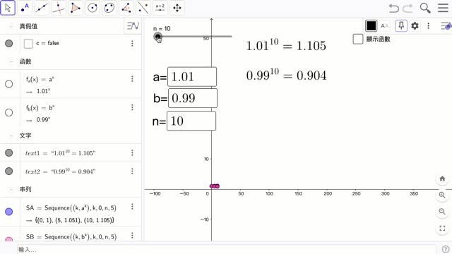
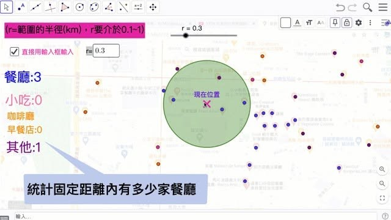
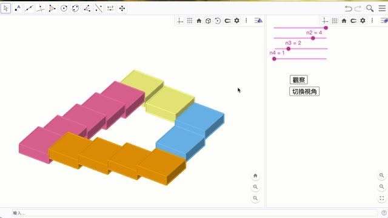
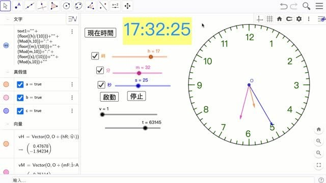

《獵豹數學招賢令》
文 by書瑋
暑假快開始前，媽媽幫我報名了Geogebra CM01的課程，我其實一開始完全都不知道GGB是什麼，而且我也沒有任何的程式的基礎。老師要求我們先看影片做第0堂課的範例練習時，我一開始根本跟不上影片的速度，覺得老師的講話速度超快，我都還要把影片速度調慢到0.75x、一直按暫停重複看才很勉強的做完作業，剛開始真的非常挫折和痛苦。但經過1-2個星期的練習之後，我卻覺得GGB非常好玩，我幾乎把上課的每個範例都會做一次，有空閒時間還會自己看朱安強老師學用數學的youtube頻道，把我喜歡的專題自己做一次，常常每周都花5-6個小時在玩GGB，亂做了很多範例，我開始很期待每周六上朱老師的課。
但經過1-2個星期的練習之後，我卻覺得GGB非常好玩，我幾乎把上課的每個範例都會做一次，有空閒時間還會自己看朱安強老師學用數學的youtube頻道，把我喜歡的專題自己做一次，常常每周都花5-6個小時在玩GGB，亂做了很多範例，我開始很期待每周六上朱老師的課。
幾何錯覺
我很喜歡老師講到的幾何錯覺的專題，幾何錯覺是因為大小、長度、面積、方向、角度等幾何元素所造成的錯視和肉眼誤判的效果。老師第一堂課就用謝帕德的桌子給我們看，原來一個相同的平行四邊形因為旋轉就會讓我們覺得大小不一樣，此外還有不同各式各樣的視錯覺，像其中一個顏色錯覺就是我自己在書上看到的，因為受到背景漸層的影響，讓我們覺得長條長方形的左右兩邊顏色深淺不一，但實際上去掉背影的影響，根本原來左右兩邊是同樣深淺的，這真的非常有趣。
https://www.geogebra.org/m/vf6jbafw
等底同高的三角形
GGB很特別的地方在於，很多我們在幾何上作圖都可以用GGB畫出來，我還常常用GGB來畫J71A的思考題，先看一下解題方向再去解題，簡單舉個國小常見的等底同高面積題，用GGB就可以用圖示表現等底同高的效果，同時幫我們算出面積來！！
https://www.geogebra.org/m/uczkmz7u
CM01 33 書瑋
時鐘
GGB還可以用一些程式碼呈現動態效果，這個是我很喜歡的一個時鐘，透過角度的計算可以顯示真正時鐘時分秒針之間的夾角，按停止它就停止，按開始他就開始，還可以調時間，時間不對按一下就復原了。這個時鐘真的很聽話。
https://www.geogebra.org/m/c4fz5b3q
我家附近有幾家餐廳
GGB還可以有一些應用操作，我們可以用CountIf指令來抓出範圍內有多少不同種類的餐廳，像我這張地圖總共有餐廳:15小吃:3咖啡廳:6其他的有9個，範圍的半徑和現在的位置和也都可以調整。
https://www.geogebra.org/m/cfnbyvxc
進步公式
最後，我用一個老師上課講到的進步公式來總結，1.01^365=37.783，也就是如果我能每天進步一點，一年以後，進步的幅度累積非常大，遠遠大於「1」； 反之，原地踏步的話，一年後還是那個「1」；更可怕的是如果每天退步一點點，一年之後就遠遠小於「1」了。希望我能每天在數學上多努力和多進步一點點，最後的成果真的能呈現指數成長。
https://www.geogebra.org/m/mzsa2pyz
授課教師 獵豹朱安強博士評語
在書瑋的GGB作品集，我看到堅持與持續累積的驚人力量。兩個月前，書瑋從未聽過 Geogebra ，也沒任何程式基礎，媽媽看到獵豹上的介紹，想著獵豹課程必屬精品，就幫他報了課。
第一週上課時，他發覺難度太有挑戰了!!! 因這課本來是設計給中學生，結果書瑋是升小四就來跨齡學習。但好在課程都有搭配講解影片，在課堂先聽直播理解大致概念後，課後都可以在回放重看，書瑋早期都將影片放慢 0.75 倍來思考拆解每個步驟。剛接觸一個軟體都會有些陌生，只要熬過了前三星期，熟悉介面後，理解原理就可以發揮創作。
在書瑋的作品集彙整了 10 個『錯覺圖』，這些錯覺圖都是大量應用序列的概念來繪製，這是高中數列知識的應用，而他在 『Penrose 階梯』這單元還結合空間向量，還原了這個空間錯覺。
『時鐘』這個任務，也是書瑋主動去研究的，平常在他這年紀的小朋友可能還在學著報讀時鐘，書瑋竟然動手用 GGB 製作這個任務。這個任務牽涉到不少滑動的連動調整，需要腳本的設置，書瑋也自學克服這些難關。
『我家附近有幾個餐廳』這也是書瑋利用到 GGB 的 countif 的概念，通過比例尺搭配地圖的使用，讓 GGB 可以自動統計他住家附近的各類餐廳數量。
『進步公式』也是激勵人心的作品，這是高中指數函數的概念，並搭配序列，讓點列可逐一出現。在書瑋身上真的體會到 1.01^365 ~ 37.78 的效果。
最後推薦大家打開 https://www.geogebra.org/u/shuwei20120831 的 GGB 左品集，來見識小四的同學也能夠通過 GGB 做出這麼多互動可視化的小程式。
圖文詳情請點以下臉書連結：
https://www.facebook.com/groups/695697124716309/permalink/879761302976556/



